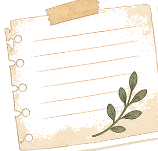
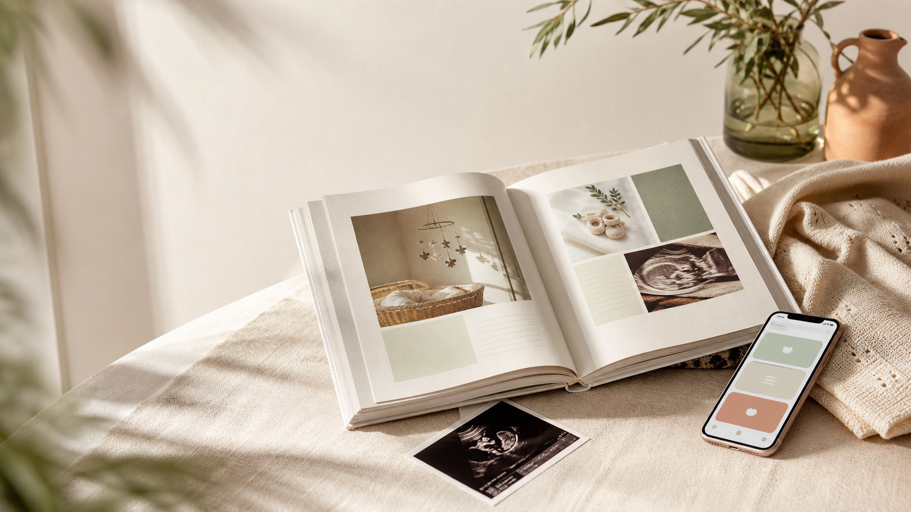
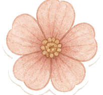
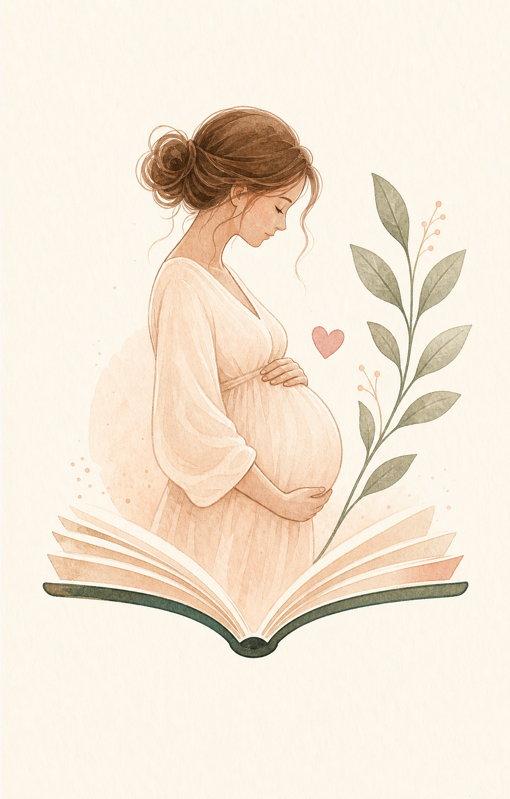
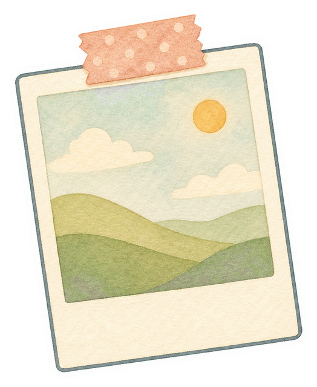
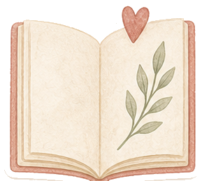
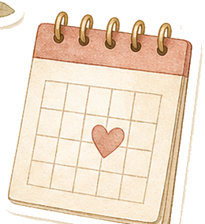
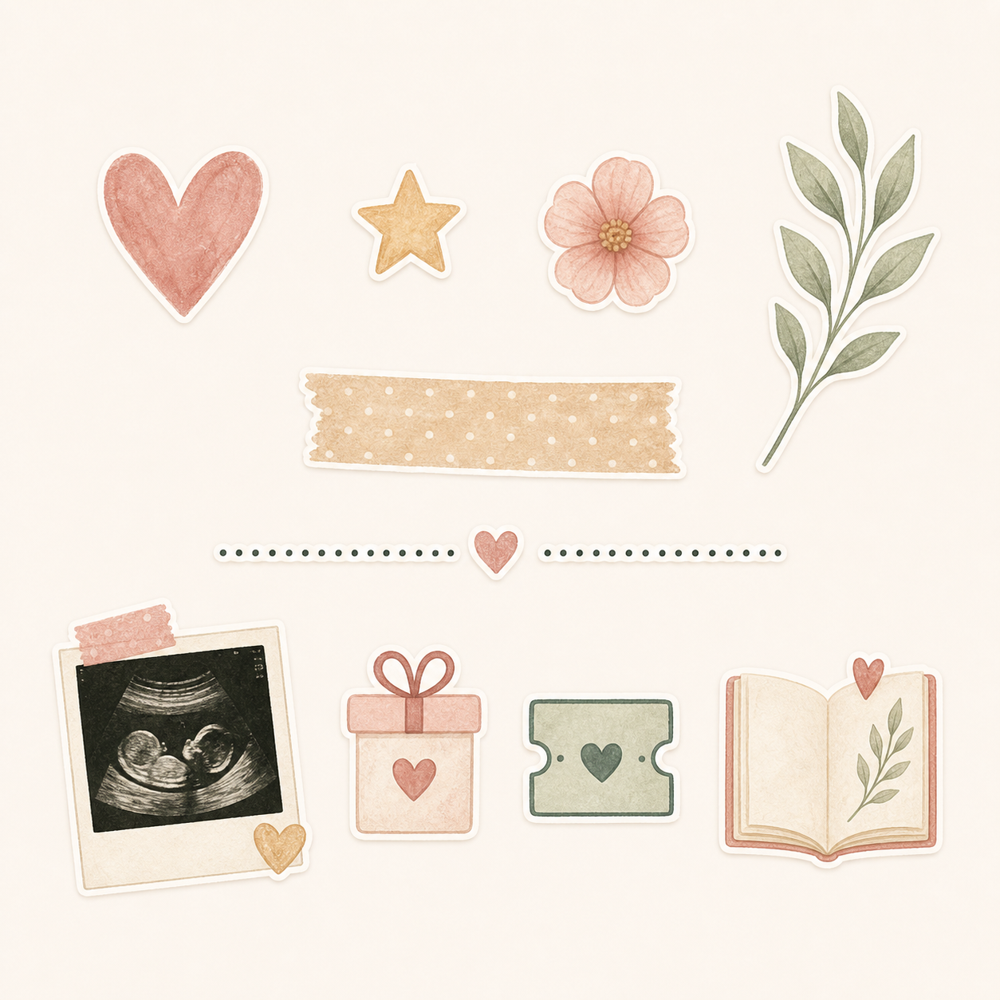

1Preguntas que abren memoria
Ideas concretas para escribir sobre cambios, emociones, ecos, preparativos y primeras veces.



Diario emocional + libro personalizado
La app acompaña tu embarazo mientras sucede. El libro conserva este viaje para siempre.
Qué es Mi Embarazo
Es la historia de la mujer que lo trajo al mundo: lo que sintió, lo que cambió y lo que quiso guardar.

1Ideas concretas para escribir sobre cambios, emociones, ecos, preparativos y primeras veces.

2Imágenes organizadas para que el libro final no sea una carpeta, sino una historia.

3El contenido se cuida desde el principio para terminar en un libro con sentido, ritmo y emoción.
Cómo funciona
Mi Embarazo acompaña el día a día sin convertirlo en una lista de tareas. Escribes, subes fotos y completas recuerdos cuando puedas.

“Porque hay viajes que solo se viven una vez y merecen ser recordados para siempre.”
Escribe durante el embarazo
Entradas libres, recuerdos guiados y ayuda para escribir cuando te falten palabras. Sin exigencias, sin frases vacías.
Una respuesta breve, una foto o una nota bastan para avanzar.
También puedes completar recuerdos después, a tu ritmo, sin presión.
La app está pensada para acompañar, no para juzgar cómo deberías vivir tu embarazo.
Convierte tus recuerdos en libro
Fotos, emociones, hitos y textos se ordenan para convertirse en una cápsula del tiempo cuidada, física o digital.

Ecografías, barriga, detalles de casa y momentos que después querrás encontrar.
La historia no se queda en datos: guarda cómo lo viviste tú.
Un recuerdo pensado para quedarse contigo y contarse dentro de muchos años.
Regala un libro
Un único regalo con todo incluido: acceso premium, libro final y una tarjeta lista para enviar o imprimir.
“No es otro objeto para preparar la llegada. Es una forma de guardar lo que se suele perder.”
Preguntas frecuentes
La beta irá abriendo acceso por fases mientras cerramos el libro, el regalo y la experiencia premium.
Sí. La experiencia contempla memoria sin presión para completar el libro después del parto.
No. Es una app emocional y de recuerdos. No sustituye seguimiento médico ni consejos profesionales.
Sí. Puedes elegir si es para ti o si es un regalo, con tarjeta imprimible o envío por email.
Beta privada
Estamos preparando el acceso inicial. Esta página queda lista para GitHub Pages y puede conectar después con App Store, Google Play o el flujo web de regalo.
Quiero inmortalizar mi vivencia